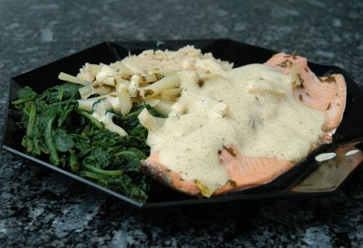

| Zutaten für 4 Personen: | |
| 800 g | Forellenfilets (4 Stück) |
| 1/2 | Zitrone |
| 10 g | Kräuter (Petersilie, Kerbel, Dill) |
| 25 g | Butter |
| 0.5 dl | Zürcher Riesling x Silvaner |
| 0.5 dl | Fischfond |
| Gewürze | |
| 200 g | Fenchel |
| 500 g | Blattspinat |
| Zutaten für Orangenreis: | |
| 200 g | Reis |
| 5-6 dl | Bouillon |
| 1 | kleine Zwiebel |
| Zeste von 1 Orange | |
| Zutaten für Sabayon: | |
| 2 | Eigelb |
| 0.75 dl | Riesling x Silvaner |
| Gewürze | |
Fenchel in feine Streifen schneiden.
Zwiebel hacken.
Orangenzesten vorbereiten.
5 Pfannen: Eine für den Reis, eine für den Spinat, eine für den Fenchel, eine für die Sabayon
Den Fenchel in feine Streifen geschnitten garen.
Die gehackte Zwiebel dämpfen, den Reis beigeben, glasig werden lassen und mit der Bouillon ablöschen. Den Reis 20 Minuten bei 200°C im Ofen zugedeckt zu einem Pilav garen.
Nach etwa 10 Minuten die Orangenzeste beigeben.
Eigelb, Riesling x Silvaner und Gewürze bei milder Hitze so lange aufschlagen, bis eine dickliche Sauce entsteht.
Die Forellenfilets mit Zitronensaft, Kräutern, Butter, Riesling x Silvaner und Fischfond pochieren (=heiss aber nicht kochend).
Pochierte Forellenfilets auf einem Fenchelbett dressieren. Mit Blattspinat und Orangenreis garnieren und mit der Riesling x Silvaner-Sabayon überziehen.
Broschüre Zürcher Wein und die Kultur dazu; Restaurant Schützenburg, Zürich, B. Zumstein
Recht aufwendig aber das Resultat lohnt sich. RE 29.7.2009
@LINKBACK_TAG@ @WAKELOCK@